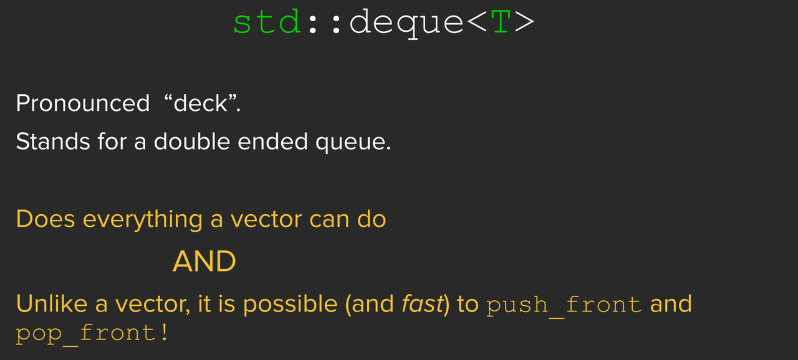

2.STL Sequence Containers
vector
初始化
1 | |
添加元素
1 | |
resize
resize可以在创建vector之后更改vector中的元素数量。
resize函数的语法与构造语法类似，可以指定多个元素，也可以指定多个元素和一个值，然后将调整vector的大小以容纳这么多元素。
但是，resize的行为与之前的构造有所不同，因为在使用resize时，vector可能已经包含元素。
resize的工作原理是从vector的末尾添加或删除元素，直到达到所需的大小。
例如：
1 | |
删除元素
pop_back：从vector序列中移除最后一个元素
erase：从vector中移除特定位置的元素。
1 | |
Deque
vector只能高效的在一个方向上增长


如果deque比vector有更多的功能，为什么要使用vector?
主要原因是速度。这主要是因为两者实现方式的不同。
Container adaptors
2.STL Sequence Containers
https://ci-tz.github.io/2024/02/02/2-STL-Sequence-Containers/